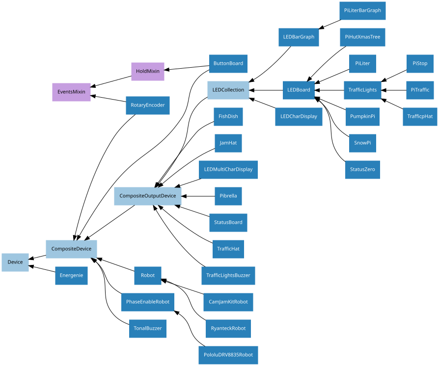
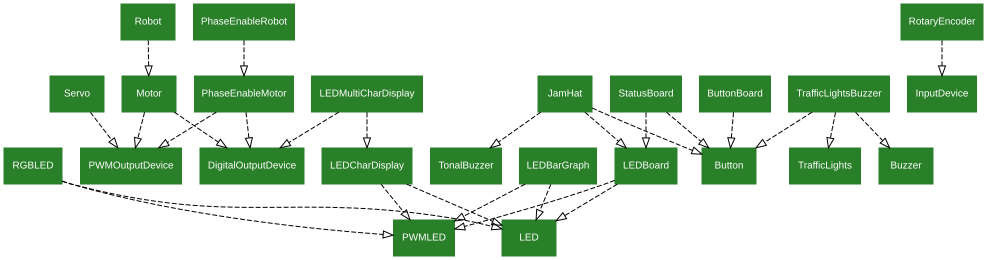

17. API - Boards and Accessories
These additional interfaces are provided to group collections of components together for ease of use, and as examples. They are composites made up of components from the various API - Input Devices and API - Output Devices provided by GPIO Zero. See those pages for more information on using components individually.
Note
All GPIO pin numbers use Broadcom (BCM) numbering by default. See the Pin Numbering section for more information.
17.1. Regular Classes
The following classes are intended for general use with the devices they are named after. All classes in this section are concrete (not abstract).
17.1.1. LEDBoard
- class gpiozero.LEDBoard(*args, **kwargs)[source]
Extends
LEDCollectionand represents a generic LED board or collection of LEDs.The following example turns on all the LEDs on a board containing 5 LEDs attached to GPIO pins 2 through 6:
from gpiozero import LEDBoard leds = LEDBoard(2, 3, 4, 5, 6) leds.on()
- Parameters:
*pins – Specify the GPIO pins that the LEDs of the board are attached to. See Pin Numbering for valid pin numbers. You can designate as many pins as necessary. You can also specify
LEDBoardinstances to create trees of LEDs.pwm (bool) – If
True, constructPWMLEDinstances for each pin. IfFalse(the default), construct regularLEDinstances.active_high (bool) – If
True(the default), theon()method will set all the associated pins to HIGH. IfFalse, theon()method will set all pins to LOW (theoff()method always does the opposite).initial_value (bool or None) – If
False(the default), all LEDs will be off initially. IfNone, each device will be left in whatever state the pin is found in when configured for output (warning: this can be on). IfTrue, the device will be switched on initially._order (list or None) – If specified, this is the order of named items specified by keyword arguments (to ensure that the
valuetuple is constructed with a specific order). All keyword arguments must be included in the collection. If omitted, an alphabetically sorted order will be selected for keyword arguments.pin_factory (Factory or None) – See API - Pins for more information (this is an advanced feature which most users can ignore).
**named_pins – Specify GPIO pins that LEDs of the board are attached to, associating each LED with a property name. You can designate as many pins as necessary and use any names, provided they’re not already in use by something else. You can also specify
LEDBoardinstances to create trees of LEDs.
- blink(on_time=1, off_time=1, fade_in_time=0, fade_out_time=0, n=None, background=True)[source]
Make all the LEDs turn on and off repeatedly.
- Parameters:
on_time (float) – Number of seconds on. Defaults to 1 second.
off_time (float) – Number of seconds off. Defaults to 1 second.
fade_in_time (float) – Number of seconds to spend fading in. Defaults to 0. Must be 0 if
pwmwasFalsewhen the class was constructed (ValueErrorwill be raised if not).fade_out_time (float) – Number of seconds to spend fading out. Defaults to 0. Must be 0 if
pwmwasFalsewhen the class was constructed (ValueErrorwill be raised if not).n (int or None) – Number of times to blink;
None(the default) means forever.background (bool) – If
True, start a background thread to continue blinking and return immediately. IfFalse, only return when the blink is finished (warning: the default value of n will result in this method never returning).
- off(*args)[source]
If no arguments are specified, turn all the LEDs off. If arguments are specified, they must be the indexes of the LEDs you wish to turn off. For example:
from gpiozero import LEDBoard leds = LEDBoard(2, 3, 4, 5) leds.on() # turn on all LEDs leds.off(0) # turn off the first LED (pin 2) leds.off(-1) # turn off the last LED (pin 5) leds.off(1, 2) # turn off the middle LEDs (pins 3 and 4) leds.on() # turn on all LEDs
If
blink()is currently active, it will be stopped first.- Parameters:
args (int) – The index(es) of the LED(s) to turn off. If no indexes are specified turn off all LEDs.
- on(*args)[source]
If no arguments are specified, turn all the LEDs on. If arguments are specified, they must be the indexes of the LEDs you wish to turn on. For example:
from gpiozero import LEDBoard leds = LEDBoard(2, 3, 4, 5) leds.on(0) # turn on the first LED (pin 2) leds.on(-1) # turn on the last LED (pin 5) leds.on(1, 2) # turn on the middle LEDs (pins 3 and 4) leds.off() # turn off all LEDs leds.on() # turn on all LEDs
If
blink()is currently active, it will be stopped first.- Parameters:
args (int) – The index(es) of the LED(s) to turn on. If no indexes are specified turn on all LEDs.
- pulse(fade_in_time=1, fade_out_time=1, n=None, background=True)[source]
Make all LEDs fade in and out repeatedly. Note that this method will only work if the pwm parameter was
Trueat construction time.- Parameters:
fade_in_time (float) – Number of seconds to spend fading in. Defaults to 1.
fade_out_time (float) – Number of seconds to spend fading out. Defaults to 1.
n (int or None) – Number of times to blink;
None(the default) means forever.background (bool) – If
True(the default), start a background thread to continue blinking and return immediately. IfFalse, only return when the blink is finished (warning: the default value of n will result in this method never returning).
- toggle(*args)[source]
If no arguments are specified, toggle the state of all LEDs. If arguments are specified, they must be the indexes of the LEDs you wish to toggle. For example:
from gpiozero import LEDBoard leds = LEDBoard(2, 3, 4, 5) leds.toggle(0) # turn on the first LED (pin 2) leds.toggle(-1) # turn on the last LED (pin 5) leds.toggle() # turn the first and last LED off, and the # middle pair on
If
blink()is currently active, it will be stopped first.- Parameters:
args (int) – The index(es) of the LED(s) to toggle. If no indexes are specified toggle the state of all LEDs.
17.1.2. LEDBarGraph
- class gpiozero.LEDBarGraph(*args, **kwargs)[source]
Extends
LEDCollectionto control a line of LEDs representing a bar graph. Positive values (0 to 1) light the LEDs from first to last. Negative values (-1 to 0) light the LEDs from last to first.The following example demonstrates turning on the first two and last two LEDs in a board containing five LEDs attached to GPIOs 2 through 6:
from gpiozero import LEDBarGraph from time import sleep graph = LEDBarGraph(2, 3, 4, 5, 6) graph.value = 2/5 # Light the first two LEDs only sleep(1) graph.value = -2/5 # Light the last two LEDs only sleep(1) graph.off()
As with all other output devices,
sourceandvaluesare supported:from gpiozero import LEDBarGraph, MCP3008 from signal import pause graph = LEDBarGraph(2, 3, 4, 5, 6, pwm=True) pot = MCP3008(channel=0) graph.source = pot pause()
- Parameters:
*pins – Specify the GPIO pins that the LEDs of the bar graph are attached to. See Pin Numbering for valid pin numbers. You can designate as many pins as necessary.
pwm (bool) – If
True, constructPWMLEDinstances for each pin. IfFalse(the default), construct regularLEDinstances. This parameter can only be specified as a keyword parameter.active_high (bool) – If
True(the default), theon()method will set all the associated pins to HIGH. IfFalse, theon()method will set all pins to LOW (theoff()method always does the opposite). This parameter can only be specified as a keyword parameter.initial_value (float) – The initial
valueof the graph given as a float between -1 and +1. Defaults to 0.0. This parameter can only be specified as a keyword parameter.pin_factory (Factory or None) – See API - Pins for more information (this is an advanced feature which most users can ignore).
- property lit_count
The number of LEDs on the bar graph actually lit up. Note that just like
value, this can be negative if the LEDs are lit from last to first.
- property value
The value of the LED bar graph. When no LEDs are lit, the value is 0. When all LEDs are lit, the value is 1. Values between 0 and 1 light LEDs linearly from first to last. Values between 0 and -1 light LEDs linearly from last to first.
To light a particular number of LEDs, simply divide that number by the number of LEDs. For example, if your graph contains 3 LEDs, the following will light the first:
from gpiozero import LEDBarGraph graph = LEDBarGraph(12, 16, 19) graph.value = 1/3
Note
Setting value to -1 will light all LEDs. However, querying it subsequently will return 1 as both representations are the same in hardware. The readable range of
valueis effectively -1 < value <= 1.
17.1.3. LEDCharDisplay
- class gpiozero.LEDCharDisplay(*args, **kwargs)[source]
Extends
LEDCollectionfor a multi-segment LED display.Multi-segment LED displays typically have 7 pins (labelled “a” through “g”) representing 7 LEDs layed out in a figure-of-8 fashion. Frequently, an eigth pin labelled “dp” is included for a trailing decimal-point:
a ━━━━━ f ┃ ┃ b ┃ g ┃ ━━━━━ e ┃ ┃ c ┃ ┃ ━━━━━ • dp dOther common layouts are 9, 14, and 16 segment displays which include additional segments permitting more accurate renditions of alphanumerics. For example:
a ━━━━━ f ┃╲i┃j╱┃ b ┃ ╲┃╱k┃ g━━ ━━h e ┃ ╱┃╲n┃ c ┃╱l┃m╲┃ ━━━━━ • dp dSuch displays have either a common anode, or common cathode pin. This class defaults to the latter; when using a common anode display active_high should be set to
False.Instances of this class can be used to display characters or control individual LEDs on the display. For example:
from gpiozero import LEDCharDisplay char = LEDCharDisplay(4, 5, 6, 7, 8, 9, 10, active_high=False) char.value = 'C'
If the class is constructed with 7 or 14 segments, a default
fontwill be loaded, mapping some ASCII characters to typical layouts. In other cases, the default mapping will simply assign “ “ (space) to all LEDs off. You can assign your own mapping at construction time or after instantiation.While the example above shows the display with a
strvalue, theoretically the font can map any value that can be the key in adict, so the value of the display can be likewise be any valid key value (e.g. you could map integer digits to LED patterns). That said, there is one exception to this: when dp is specified to enable the decimal-point, thevaluemust be astras the presence or absence of a “.” suffix indicates whether the dp LED is lit.- Parameters:
*pins – Specify the GPIO pins that the multi-segment display is attached to. Pins should be in the LED segment order A, B, C, D, E, F, G, and will be named automatically by the class. If a decimal-point pin is present, specify it separately as the dp parameter.
dp (int or str) – If a decimal-point segment is present, specify it as this named parameter.
font (dict or None) – A mapping of values (typically characters, but may also be numbers) to tuples of LED states. A default mapping for ASCII characters is provided for 7 and 14 segment displays.
pwm (bool) – If
True, constructPWMLEDinstances for each pin. IfFalse(the default), construct regularLEDinstances.active_high (bool) – If
True(the default), theon()method will set all the associated pins to HIGH. IfFalse, theon()method will set all pins to LOW (theoff()method always does the opposite).initial_value – The initial value to display. Defaults to space (” “) which typically maps to all LEDs being inactive. If
None, each device will be left in whatever state the pin is found in when configured for output (warning: this can be on).pin_factory (Factory or None) – See API - Pins for more information (this is an advanced feature which most users can ignore).
- property font
An
LEDCharFontmapping characters to tuples of LED states. The font is mutable after construction. You can assign a tuple of LED states to a character to modify the font, delete an existing character in the font, or assign a mapping of characters to tuples to replace the entire font.Note that modifying the
fontnever alters the underlying LED states. Only assignment tovalue, or calling the inheritedLEDCollectionmethods (on(),off(), etc.) modifies LED states. However, modifying the font may alter the character returned by queryingvalue.
- property value
The character the display should show. This is mapped by the current
fontto a tuple of LED states which is applied to the underlying LED objects when this attribute is set.When queried, the current LED states are looked up in the font to determine the character shown. If the current LED states do not correspond to any character in the
font, the value isNone.It is possible for multiple characters in the font to map to the same LED states (e.g. S and 5). In this case, if the font was constructed from an ordered mapping (which is the default), then the first matching mapping will always be returned. This also implies that the value queried need not match the value set.
17.1.4. LEDMultiCharDisplay
- class gpiozero.LEDMultiCharDisplay(*args, **kwargs)[source]
Wraps
LEDCharDisplayfor multi-character multiplexed LED character displays.The class is constructed with a char which is an instance of the
LEDCharDisplayclass, capable of controlling the LEDs in one character of the display, and an additional set of pins that represent the common cathode (or anode) of each character.Warning
You should not attempt to connect the common cathode (or anode) off each character directly to a GPIO. Rather, use a set of transistors (or some other suitable component capable of handling the current of all the segment LEDs simultaneously) to connect the common cathode to ground (or the common anode to the supply) and control those transistors from the GPIOs specified under pins.
The active_high parameter defaults to
True. Note that it only applies to the specified pins, which are assumed to be controlling a set of transistors (hence the default). The specified char will use its own active_high parameter. Finally, initial_value defaults to a tuple ofvalueattribute of the specified display multiplied by the number of pins provided.When the
valueis set such that one or more characters in the display differ in value, a background thread is implicitly started to rotate the active character, relying on persistence of vision to display the complete value.- property plex_delay
The delay (measured in seconds) in the loop used to switch each character in the multiplexed display on. Defaults to 0.005 seconds which is generally sufficient to provide a “stable” (non-flickery) display.
- property value
The sequence of values to display.
This can be any sequence containing keys from the
fontof the associated character display. For example, if the value consists only of single-character strings, it’s valid to assign a string to this property (as a string is simply a sequence of individual character keys):from gpiozero import LEDCharDisplay, LEDMultiCharDisplay c = LEDCharDisplay(4, 5, 6, 7, 8, 9, 10) d = LEDMultiCharDisplay(c, 19, 20, 21, 22) d.value = 'LEDS'
However, things get more complicated if a decimal point is in use as then this class needs to know explicitly where to break the value for use on each character of the display. This can be handled by simply assigning a sequence of strings thus:
from gpiozero import LEDCharDisplay, LEDMultiCharDisplay c = LEDCharDisplay(4, 5, 6, 7, 8, 9, 10) d = LEDMultiCharDisplay(c, 19, 20, 21, 22) d.value = ('L.', 'E', 'D', 'S')
This is how the value will always be represented when queried (as a tuple of individual values) as it neatly handles dealing with heterogeneous types and the aforementioned decimal point issue.
Note
The value also controls whether a background thread is in use to multiplex the display. When all positions in the value are equal the background thread is disabled and all characters are simultaneously enabled.
17.1.5. LEDCharFont
- class gpiozero.LEDCharFont(font)[source]
Contains a mapping of values to tuples of LED states.
This effectively acts as a “font” for
LEDCharDisplay, and two default fonts (for 7-segment and 14-segment displays) are shipped with GPIO Zero by default. You can construct your own font instance from adictwhich maps values (usually single-character strings) to a tuple of LED states:from gpiozero import LEDCharDisplay, LEDCharFont my_font = LEDCharFont({ ' ': (0, 0, 0, 0, 0, 0, 0), 'D': (1, 1, 1, 1, 1, 1, 0), 'A': (1, 1, 1, 0, 1, 1, 1), 'd': (0, 1, 1, 1, 1, 0, 1), 'a': (1, 1, 1, 1, 1, 0, 1), }) display = LEDCharDisplay(26, 13, 12, 22, 17, 19, 6, dp=5, font=my_font) display.value = 'D'
Font instances are mutable and can be changed while actively in use by an instance of
LEDCharDisplay. However, changing the font will not change the state of the LEDs in the display (though it may change thevalueof the display when next queried).Note
Your custom mapping should always include a value (typically space) which represents all the LEDs off. This will usually be the default value for an instance of
LEDCharDisplay.You may also wish to load fonts from a friendly text-based format. A simple parser for such formats (supporting an arbitrary number of segments) is provided by
gpiozero.fonts.load_segment_font().
17.1.7. TrafficLights
- class gpiozero.TrafficLights(*args, **kwargs)[source]
Extends
LEDBoardfor devices containing red, yellow, and green LEDs.The following example initializes a device connected to GPIO pins 2, 3, and 4, then lights the amber (yellow) LED attached to GPIO 3:
from gpiozero import TrafficLights traffic = TrafficLights(2, 3, 4) traffic.amber.on()
- Parameters:
red (int or str) – The GPIO pin that the red LED is attached to. See Pin Numbering for valid pin numbers.
amber (int or str or None) – The GPIO pin that the amber LED is attached to. See Pin Numbering for valid pin numbers.
yellow (int or str or None) – The GPIO pin that the yellow LED is attached to. This is merely an alias for the
amberparameter; you can’t specify bothamberandyellow. See Pin Numbering for valid pin numbers.green (int or str) – The GPIO pin that the green LED is attached to. See Pin Numbering for valid pin numbers.
pwm (bool) – If
True, constructPWMLEDinstances to represent each LED. IfFalse(the default), construct regularLEDinstances.initial_value (bool or None) – If
False(the default), all LEDs will be off initially. IfNone, each device will be left in whatever state the pin is found in when configured for output (warning: this can be on). IfTrue, the device will be switched on initially.pin_factory (Factory or None) – See API - Pins for more information (this is an advanced feature which most users can ignore).
- amber
The amber
LEDorPWMLED. Note that this attribute will not be present when the instance is constructed with the yellow keyword parameter.
17.1.8. TrafficLightsBuzzer
- class gpiozero.TrafficLightsBuzzer(*args, **kwargs)[source]
Extends
CompositeOutputDeviceand is a generic class for HATs with traffic lights, a button and a buzzer.- Parameters:
lights (TrafficLights) – An instance of
TrafficLightsrepresenting the traffic lights of the HAT.buzzer (Buzzer) – An instance of
Buzzerrepresenting the buzzer on the HAT.button (Button) – An instance of
Buttonrepresenting the button on the HAT.pin_factory (Factory or None) – See API - Pins for more information (this is an advanced feature which most users can ignore).
- lights
The
TrafficLightsinstance passed as the lights parameter.
17.1.9. PiHutXmasTree
- class gpiozero.PiHutXmasTree(*args, **kwargs)[source]
Extends
LEDBoardfor The Pi Hut’s Xmas board: a 3D Christmas tree board with 24 red LEDs and a white LED as a star on top.The 24 red LEDs can be accessed through the attributes led0, led1, led2, and so on. The white star LED is accessed through the
starattribute. Alternatively, as with all descendents ofLEDBoard, you can treat the instance as a sequence of LEDs (the first element is thestar).The Xmas Tree board pins are fixed and therefore there’s no need to specify them when constructing this class. The following example turns all the LEDs on one at a time:
from gpiozero import PiHutXmasTree from time import sleep tree = PiHutXmasTree() for light in tree: light.on() sleep(1)
The following example turns the star LED on and sets all the red LEDs to flicker randomly:
from gpiozero import PiHutXmasTree from gpiozero.tools import random_values from signal import pause tree = PiHutXmasTree(pwm=True) tree.star.on() for led in tree[1:]: led.source_delay = 0.1 led.source = random_values() pause()
- Parameters:
pwm (bool) – If
True, constructPWMLEDinstances for each pin. IfFalse(the default), construct regularLEDinstances.initial_value (bool or None) – If
False(the default), all LEDs will be off initially. IfNone, each device will be left in whatever state the pin is found in when configured for output (warning: this can be on). IfTrue, the device will be switched on initially.pin_factory (Factory or None) – See API - Pins for more information (this is an advanced feature which most users can ignore).
17.1.10. LedBorg
- class gpiozero.LedBorg(*args, **kwargs)[source]
Extends
RGBLEDfor the PiBorg LedBorg: an add-on board containing a very bright RGB LED.The LedBorg pins are fixed and therefore there’s no need to specify them when constructing this class. The following example turns the LedBorg purple:
from gpiozero import LedBorg led = LedBorg() led.color = (1, 0, 1)
- Parameters:
initial_value (Color or tuple) – The initial color for the LedBorg. Defaults to black
(0, 0, 0).pwm (bool) – If
True(the default), constructPWMLEDinstances for each component of the LedBorg. IfFalse, construct regularLEDinstances, which prevents smooth color graduations.pin_factory (Factory or None) – See API - Pins for more information (this is an advanced feature which most users can ignore).
17.1.11. PiLiter
- class gpiozero.PiLiter(*args, **kwargs)[source]
Extends
LEDBoardfor the Ciseco Pi-LITEr: a strip of 8 very bright LEDs.The Pi-LITEr pins are fixed and therefore there’s no need to specify them when constructing this class. The following example turns on all the LEDs of the Pi-LITEr:
from gpiozero import PiLiter lite = PiLiter() lite.on()
- Parameters:
pwm (bool) – If
True, constructPWMLEDinstances for each pin. IfFalse(the default), construct regularLEDinstances.initial_value (bool or None) – If
False(the default), all LEDs will be off initially. IfNone, each LED will be left in whatever state the pin is found in when configured for output (warning: this can be on). IfTrue, the each LED will be switched on initially.pin_factory (Factory or None) – See API - Pins for more information (this is an advanced feature which most users can ignore).
17.1.12. PiLiterBarGraph
- class gpiozero.PiLiterBarGraph(*args, **kwargs)[source]
Extends
LEDBarGraphto treat the Ciseco Pi-LITEr as an 8-segment bar graph.The Pi-LITEr pins are fixed and therefore there’s no need to specify them when constructing this class. The following example sets the graph value to 0.5:
from gpiozero import PiLiterBarGraph graph = PiLiterBarGraph() graph.value = 0.5
- Parameters:
pwm (bool) – If
True, constructPWMLEDinstances for each pin. IfFalse(the default), construct regularLEDinstances.initial_value (float) – The initial
valueof the graph given as a float between -1 and +1. Defaults to0.0.pin_factory (Factory or None) – See API - Pins for more information (this is an advanced feature which most users can ignore).
17.1.13. PiTraffic
- class gpiozero.PiTraffic(*args, **kwargs)[source]
Extends
TrafficLightsfor the Low Voltage Labs PI-TRAFFIC vertical traffic lights board when attached to GPIO pins 9, 10, and 11.There’s no need to specify the pins if the PI-TRAFFIC is connected to the default pins (9, 10, 11). The following example turns on the amber LED on the PI-TRAFFIC:
from gpiozero import PiTraffic traffic = PiTraffic() traffic.amber.on()
To use the PI-TRAFFIC board when attached to a non-standard set of pins, simply use the parent class,
TrafficLights.- Parameters:
pwm (bool) – If
True, constructPWMLEDinstances to represent each LED. IfFalse(the default), construct regularLEDinstances.initial_value (bool) – If
False(the default), all LEDs will be off initially. IfNone, each device will be left in whatever state the pin is found in when configured for output (warning: this can be on). IfTrue, the device will be switched on initially.pin_factory (Factory or None) – See API - Pins for more information (this is an advanced feature which most users can ignore).
17.1.14. PiStop
- class gpiozero.PiStop(*args, **kwargs)[source]
Extends
TrafficLightsfor the PiHardware Pi-Stop: a vertical traffic lights board.The following example turns on the amber LED on a Pi-Stop connected to location
A+:from gpiozero import PiStop traffic = PiStop('A+') traffic.amber.on()
- Parameters:
location (str) – The location on the GPIO header to which the Pi-Stop is connected. Must be one of:
A,A+,B,B+,C,D.pwm (bool) – If
True, constructPWMLEDinstances to represent each LED. IfFalse(the default), construct regularLEDinstances.initial_value (bool) – If
False(the default), all LEDs will be off initially. IfNone, each device will be left in whatever state the pin is found in when configured for output (warning: this can be on). IfTrue, the device will be switched on initially.pin_factory (Factory or None) – See API - Pins for more information (this is an advanced feature which most users can ignore).
17.1.15. FishDish
- class gpiozero.FishDish(*args, **kwargs)[source]
Extends
CompositeOutputDevicefor the Pi Supply FishDish: traffic light LEDs, a button and a buzzer.The FishDish pins are fixed and therefore there’s no need to specify them when constructing this class. The following example waits for the button to be pressed on the FishDish, then turns on all the LEDs:
from gpiozero import FishDish fish = FishDish() fish.button.wait_for_press() fish.lights.on()
17.1.16. TrafficHat
- class gpiozero.TrafficHat(*args, **kwargs)[source]
Extends
CompositeOutputDevicefor the Pi Supply Traffic HAT: a board with traffic light LEDs, a button and a buzzer.The Traffic HAT pins are fixed and therefore there’s no need to specify them when constructing this class. The following example waits for the button to be pressed on the Traffic HAT, then turns on all the LEDs:
from gpiozero import TrafficHat hat = TrafficHat() hat.button.wait_for_press() hat.lights.on()
17.1.17. TrafficpHat
- class gpiozero.TrafficpHat(*args, **kwargs)[source]
Extends
TrafficLightsfor the Pi Supply Traffic pHAT: a small board with traffic light LEDs.The Traffic pHAT pins are fixed and therefore there’s no need to specify them when constructing this class. The following example then turns on all the LEDs:
from gpiozero import TrafficpHat phat = TrafficpHat() phat.red.on() phat.blink()
- Parameters:
pwm (bool) – If
True, constructPWMLEDinstances to represent each LED. IfFalse(the default), construct regularLEDinstances.initial_value (bool or None) – If
False(the default), all LEDs will be off initially. IfNone, each device will be left in whatever state the pin is found in when configured for output (warning: this can be on). IfTrue, the device will be switched on initially.pin_factory (Factory or None) – See API - Pins for more information (this is an advanced feature which most users can ignore).
17.1.18. JamHat
- class gpiozero.JamHat(*args, **kwargs)[source]
Extends
CompositeOutputDevicefor the ModMyPi JamHat board.There are 6 LEDs, two buttons and a tonal buzzer. The pins are fixed. Usage:
from gpiozero import JamHat hat = JamHat() hat.button_1.wait_for_press() hat.lights_1.on() hat.buzzer.play('C4') hat.button_2.wait_for_press() hat.off()
- Parameters:
- lights_1, lights_2
Two
LEDBoardinstances representing the top (lights_1) and bottom (lights_2) rows of LEDs on the JamHat.
- button_1, button_2
The left (button_1) and right (button_2)
Buttonobjects on the JamHat.
- buzzer
The
TonalBuzzerat the bottom right of the JamHat.
17.1.19. Pibrella
- class gpiozero.Pibrella(*args, **kwargs)[source]
Extends
CompositeOutputDevicefor the Cyntech/Pimoroni Pibrella board.The Pibrella board comprises 3 LEDs, a button, a tonal buzzer, four general purpose input channels, and four general purpose output channels (with LEDs).
This class exposes the LEDs, button and buzzer.
Usage:
from gpiozero import Pibrella pb = Pibrella() pb.button.wait_for_press() pb.lights.on() pb.buzzer.play('A4') pb.off()
The four input and output channels are exposed so you can create GPIO Zero devices using these pins without looking up their respective pin numbers:
from gpiozero import Pibrella, LED, Button pb = Pibrella() btn = Button(pb.inputs.a, pull_up=False) led = LED(pb.outputs.e) btn.when_pressed = led.on
- Parameters:
- lights
TrafficLightsinstance representing the three LEDs
- buzzer
A
TonalBuzzerobject representing the buzzer
- inputs
A
namedtuple()of the input pin numbers- a, b, c, d
- outputs
A
namedtuple()of the output pin numbers- e, f, g, h
17.1.20. Robot
- class gpiozero.Robot(*args, **kwargs)[source]
Extends
CompositeDeviceto represent a generic dual-motor robot.This class is constructed with two motor instances representing the left and right wheels of the robot respectively. For example, if the left motor’s controller is connected to GPIOs 4 and 14, while the right motor’s controller is connected to GPIOs 17 and 18 then the following example will drive the robot forward:
from gpiozero import Robot robot = Robot(left=Motor(4, 14), right=Motor(17, 18)) robot.forward()
- Parameters:
left (Motor or PhaseEnableMotor) – A
Motoror aPhaseEnableMotorfor the left wheel of the robot.right (Motor or PhaseEnableMotor) – A
Motoror aPhaseEnableMotorfor the right wheel of the robot.pin_factory (Factory or None) – See API - Pins for more information (this is an advanced feature which most users can ignore).
- backward(speed=1, *, curve_left=0, curve_right=0)[source]
Drive the robot backward by running both motors backward.
- Parameters:
speed (float) – Speed at which to drive the motors, as a value between 0 (stopped) and 1 (full speed). The default is 1.
curve_left (float) – The amount to curve left while moving backwards, by driving the left motor at a slower speed. Maximum curve_left is 1, the default is 0 (no curve). This parameter can only be specified as a keyword parameter, and is mutually exclusive with curve_right.
curve_right (float) – The amount to curve right while moving backwards, by driving the right motor at a slower speed. Maximum curve_right is 1, the default is 0 (no curve). This parameter can only be specified as a keyword parameter, and is mutually exclusive with curve_left.
- forward(speed=1, *, curve_left=0, curve_right=0)[source]
Drive the robot forward by running both motors forward.
- Parameters:
speed (float) – Speed at which to drive the motors, as a value between 0 (stopped) and 1 (full speed). The default is 1.
curve_left (float) – The amount to curve left while moving forwards, by driving the left motor at a slower speed. Maximum curve_left is 1, the default is 0 (no curve). This parameter can only be specified as a keyword parameter, and is mutually exclusive with curve_right.
curve_right (float) – The amount to curve right while moving forwards, by driving the right motor at a slower speed. Maximum curve_right is 1, the default is 0 (no curve). This parameter can only be specified as a keyword parameter, and is mutually exclusive with curve_left.
- left(speed=1)[source]
Make the robot turn left by running the right motor forward and left motor backward.
- Parameters:
speed (float) – Speed at which to drive the motors, as a value between 0 (stopped) and 1 (full speed). The default is 1.
- reverse()[source]
Reverse the robot’s current motor directions. If the robot is currently running full speed forward, it will run full speed backward. If the robot is turning left at half-speed, it will turn right at half-speed. If the robot is currently stopped it will remain stopped.
- right(speed=1)[source]
Make the robot turn right by running the left motor forward and right motor backward.
- Parameters:
speed (float) – Speed at which to drive the motors, as a value between 0 (stopped) and 1 (full speed). The default is 1.
- property value
Represents the motion of the robot as a tuple of (left_motor_speed, right_motor_speed) with
(-1, -1)representing full speed backwards,(1, 1)representing full speed forwards, and(0, 0)representing stopped.
17.1.21. PhaseEnableRobot
17.1.22. RyanteckRobot
- class gpiozero.RyanteckRobot(*args, **kwargs)[source]
Extends
Robotfor the Ryanteck motor controller board.The Ryanteck MCB pins are fixed and therefore there’s no need to specify them when constructing this class. The following example drives the robot forward:
from gpiozero import RyanteckRobot robot = RyanteckRobot() robot.forward()
- Parameters:
pwm (bool) – If
True(the default), constructPWMOutputDeviceinstances for the motor controller pins, allowing both direction and variable speed control. IfFalse, constructDigitalOutputDeviceinstances, allowing only direction control.pin_factory (Factory or None) – See API - Pins for more information (this is an advanced feature which most users can ignore).
17.1.23. CamJamKitRobot
- class gpiozero.CamJamKitRobot(*args, **kwargs)[source]
Extends
Robotfor the CamJam #3 EduKit motor controller board.The CamJam robot controller pins are fixed and therefore there’s no need to specify them when constructing this class. The following example drives the robot forward:
from gpiozero import CamJamKitRobot robot = CamJamKitRobot() robot.forward()
- Parameters:
pwm (bool) – If
True(the default), constructPWMOutputDeviceinstances for the motor controller pins, allowing both direction and variable speed control. IfFalse, constructDigitalOutputDeviceinstances, allowing only direction control.pin_factory (Factory or None) – See API - Pins for more information (this is an advanced feature which most users can ignore).
17.1.24. PololuDRV8835Robot
- class gpiozero.PololuDRV8835Robot(*args, **kwargs)[source]
Extends
Robotfor the Pololu DRV8835 Dual Motor Driver Kit.The Pololu DRV8835 pins are fixed and therefore there’s no need to specify them when constructing this class. The following example drives the robot forward:
from gpiozero import PololuDRV8835Robot robot = PololuDRV8835Robot() robot.forward()
- Parameters:
pwm (bool) – If
True(the default), constructPWMOutputDeviceinstances for the motor controller’s enable pins, allowing both direction and variable speed control. IfFalse, constructDigitalOutputDeviceinstances, allowing only direction control.pin_factory (Factory or None) – See API - Pins for more information (this is an advanced feature which most users can ignore).
17.1.25. Energenie
- class gpiozero.Energenie(*args, **kwargs)[source]
Extends
Deviceto represent an Energenie socket controller.This class is constructed with a socket number and an optional initial state (defaults to
False, meaning off). Instances of this class can be used to switch peripherals on and off. For example:from gpiozero import Energenie lamp = Energenie(1) lamp.on()
- Parameters:
socket (int) – Which socket this instance should control. This is an integer number between 1 and 4.
initial_value (bool or None) – The initial state of the socket. As Energenie sockets provide no means of reading their state, you may provide an initial state for the socket, which will be set upon construction. This defaults to
Falsewhich will switch the socket off. SpecifyingNonewill not set any initial state nor transmit any control signal to the device.pin_factory (Factory or None) – See API - Pins for more information (this is an advanced feature which most users can ignore).
- property socket
Returns the socket number.
17.1.26. StatusZero
- class gpiozero.StatusZero(*args, **kwargs)[source]
Extends
LEDBoardfor The Pi Hut’s STATUS Zero: a Pi Zero sized add-on board with three sets of red/green LEDs to provide a status indicator.The following example designates the first strip the label “wifi” and the second “raining”, and turns them green and red respectfully:
from gpiozero import StatusZero status = StatusZero('wifi', 'raining') status.wifi.green.on() status.raining.red.on()
Each designated label will contain two
LEDobjects named “red” and “green”.- Parameters:
*labels (str) – Specify the names of the labels you wish to designate the strips to. You can list up to three labels. If no labels are given, three strips will be initialised with names ‘one’, ‘two’, and ‘three’. If some, but not all strips are given labels, any remaining strips will not be initialised.
pwm (bool) – If
True, constructPWMLEDinstances to represent each LED. IfFalse(the default), construct regularLEDinstances.initial_value (bool) – If
False(the default), all LEDs will be off initially. IfNone, each device will be left in whatever state the pin is found in when configured for output (warning: this can be on). IfTrue, the device will be switched on initially.pin_factory (Factory or None) – See API - Pins for more information (this is an advanced feature which most users can ignore).
- your-label-here, your-label-here, ...
This entry represents one of the three labelled attributes supported on the STATUS Zero board. It is an
LEDBoardwhich contains:
17.1.27. StatusBoard
- class gpiozero.StatusBoard(*args, **kwargs)[source]
Extends
CompositeOutputDevicefor The Pi Hut’s STATUS board: a HAT sized add-on board with five sets of red/green LEDs and buttons to provide a status indicator with additional input.The following example designates the first strip the label “wifi” and the second “raining”, turns the wifi green and then activates the button to toggle its lights when pressed:
from gpiozero import StatusBoard status = StatusBoard('wifi', 'raining') status.wifi.lights.green.on() status.wifi.button.when_pressed = status.wifi.lights.toggle
Each designated label will contain a “lights”
LEDBoardcontaining twoLEDobjects named “red” and “green”, and aButtonobject named “button”.- Parameters:
*labels (str) – Specify the names of the labels you wish to designate the strips to. You can list up to five labels. If no labels are given, five strips will be initialised with names ‘one’ to ‘five’. If some, but not all strips are given labels, any remaining strips will not be initialised.
pwm (bool) – If
True, constructPWMLEDinstances to represent each LED. IfFalse(the default), construct regularLEDinstances.initial_value (bool) – If
False(the default), all LEDs will be off initially. IfNone, each device will be left in whatever state the pin is found in when configured for output (warning: this can be on). IfTrue, the device will be switched on initially.pin_factory (Factory or None) – See API - Pins for more information (this is an advanced feature which most users can ignore).
- your-label-here, your-label-here, ...
This entry represents one of the five labelled attributes supported on the STATUS board. It is an
CompositeOutputDevicewhich contains:
17.1.28. SnowPi
- class gpiozero.SnowPi(*args, **kwargs)[source]
Extends
LEDBoardfor the Ryanteck SnowPi board.The SnowPi pins are fixed and therefore there’s no need to specify them when constructing this class. The following example turns on the eyes, sets the nose pulsing, and the arms blinking:
from gpiozero import SnowPi snowman = SnowPi(pwm=True) snowman.eyes.on() snowman.nose.pulse() snowman.arms.blink()
- Parameters:
pwm (bool) – If
True, constructPWMLEDinstances to represent each LED. IfFalse(the default), construct regularLEDinstances.initial_value (bool) – If
False(the default), all LEDs will be off initially. IfNone, each device will be left in whatever state the pin is found in when configured for output (warning: this can be on). IfTrue, the device will be switched on initially.pin_factory (Factory or None) – See API - Pins for more information (this is an advanced feature which most users can ignore).
17.1.29. PumpkinPi
- class gpiozero.PumpkinPi(*args, **kwargs)[source]
Extends
LEDBoardfor the ModMyPi PumpkinPi board.There are twelve LEDs connected up to individual pins, so for the PumpkinPi the pins are fixed. For example:
from gpiozero import PumpkinPi pumpkin = PumpkinPi(pwm=True) pumpkin.sides.pulse() pumpkin.off()
- Parameters:
pwm (bool) – If
True, constructPWMLEDinstances to represent each LED. IfFalse(the default), construct regularLEDinstancesinitial_value (bool or None) – If
False(the default), all LEDs will be off initially. IfNone, each device will be left in whatever state the pin is found in when configured for output (warning: this can be on). IfTrue, the device will be switched on initially.pin_factory (Factory or None) – See API - Pins for more information (this is an advanced feature which most users can ignore).
17.2. Base Classes
The classes in the sections above are derived from a series of base classes, some of which are effectively abstract. The classes form the (partial) hierarchy displayed in the graph below:

For composite devices, the following chart shows which devices are composed of which other devices:

The following sections document these base classes for advanced users that wish to construct classes for their own devices.
17.2.1. LEDCollection
- class gpiozero.LEDCollection(*args, **kwargs)[source]
Extends
CompositeOutputDevice. Abstract base class forLEDBoardandLEDBarGraph.- property is_lit
Composite devices are considered “active” if any of their constituent devices have a “truthy” value.
- property leds
A flat tuple of all LEDs contained in this collection (and all sub-collections).
17.2.2. CompositeOutputDevice
- class gpiozero.CompositeOutputDevice(*args, **kwargs)[source]
Extends
CompositeDevicewithon(),off(), andtoggle()methods for controlling subordinate output devices. Also extendsvalueto be writeable.- Parameters:
*args (Device) – The un-named devices that belong to the composite device. The
valueattributes of these devices will be represented within the composite device’s tuplevaluein the order specified here._order (list or None) – If specified, this is the order of named items specified by keyword arguments (to ensure that the
valuetuple is constructed with a specific order). All keyword arguments must be included in the collection. If omitted, an alphabetically sorted order will be selected for keyword arguments.pin_factory (Factory or None) – See API - Pins for more information (this is an advanced feature which most users can ignore).
**kwargs (Device) – The named devices that belong to the composite device. These devices will be accessible as named attributes on the resulting device, and their
valueattributes will be accessible as named elements of the composite device’s tuplevalue.
- toggle()[source]
Toggle all the output devices. For each device, if it’s on, turn it off; if it’s off, turn it on.
- property value
A tuple containing a value for each subordinate device. This property can also be set to update the state of all subordinate output devices.
17.2.3. CompositeDevice
- class gpiozero.CompositeDevice(*args, **kwargs)[source]
Extends
Device. Represents a device composed of multiple devices like simple HATs, H-bridge motor controllers, robots composed of multiple motors, etc.The constructor accepts subordinate devices as positional or keyword arguments. Positional arguments form unnamed devices accessed by treating the composite device as a container, while keyword arguments are added to the device as named (read-only) attributes.
For example:
>>> from gpiozero import * >>> d = CompositeDevice(LED(2), LED(3), LED(4), btn=Button(17)) >>> d[0] <gpiozero.LED object on pin GPIO2, active_high=True, is_active=False> >>> d[1] <gpiozero.LED object on pin GPIO3, active_high=True, is_active=False> >>> d[2] <gpiozero.LED object on pin GPIO4, active_high=True, is_active=False> >>> d.btn <gpiozero.Button object on pin GPIO17, pull_up=True, is_active=False> >>> d.value CompositeDeviceValue(device_0=False, device_1=False, device_2=False, btn=False)
- Parameters:
*args (Device) – The un-named devices that belong to the composite device. The
valueattributes of these devices will be represented within the composite device’s tuplevaluein the order specified here._order (list or None) – If specified, this is the order of named items specified by keyword arguments (to ensure that the
valuetuple is constructed with a specific order). All keyword arguments must be included in the collection. If omitted, an alphabetically sorted order will be selected for keyword arguments.pin_factory (Factory or None) – See API - Pins for more information (this is an advanced feature which most users can ignore).
**kwargs (Device) – The named devices that belong to the composite device. These devices will be accessible as named attributes on the resulting device, and their
valueattributes will be accessible as named elements of the composite device’s tuplevalue.
- close()[source]
Shut down the device and release all associated resources (such as GPIO pins).
This method is idempotent (can be called on an already closed device without any side-effects). It is primarily intended for interactive use at the command line. It disables the device and releases its pin(s) for use by another device.
You can attempt to do this simply by deleting an object, but unless you’ve cleaned up all references to the object this may not work (even if you’ve cleaned up all references, there’s still no guarantee the garbage collector will actually delete the object at that point). By contrast, the close method provides a means of ensuring that the object is shut down.
For example, if you have a breadboard with a buzzer connected to pin 16, but then wish to attach an LED instead:
>>> from gpiozero import * >>> bz = Buzzer(16) >>> bz.on() >>> bz.off() >>> bz.close() >>> led = LED(16) >>> led.blink()
Devicedescendents can also be used as context managers using thewithstatement. For example:>>> from gpiozero import * >>> with Buzzer(16) as bz: ... bz.on() ... >>> with LED(16) as led: ... led.on() ...
- property closed
Returns
Trueif the device is closed (see theclose()method). Once a device is closed you can no longer use any other methods or properties to control or query the device.
- property is_active
Composite devices are considered “active” if any of their constituent devices have a “truthy” value.
- property namedtuple
The
namedtuple()type constructed to represent the value of the composite device. Thevalueattribute returns values of this type.
- property value
A
namedtuple()containing a value for each subordinate device. Devices with names will be represented as named elements. Unnamed devices will have a unique name generated for them, and they will appear in the position they appeared in the constructor.